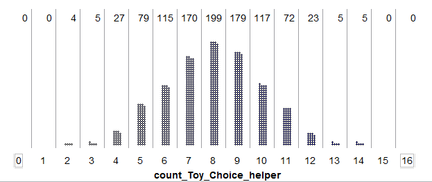

Chapter 2 Part 1¶
The general approach used in a statistical investigation is shown in the following diagram. Note that every investigation starts with a question that gets converted to a research hypothesis. Though we will rarely design our own studies in this course, we will discuss good strategies and best practices for collecting data throughout the semester. Most of our attention will be devoted to descriptive and inferential methods for analyzing the data, how we decide whether the data supports the research question, and how to write conclusions that appropriately summarize the results of the study.
| A Statistical Investigation |
|---|
|  |
| Definitions |
|---|
|
For example, recall the Helper vs. Hinder study from Example 1.2. In the sample of 16 infants studied, 14 of the 16 picked the helper. What descriptive methods might we use to describe the results of this study?
* FORMAL HYPOTHESIS TESTING*
*Population Parameters vs. Sample Statistics*
In each of the previous examples, we tested a claim about a population parameter of interest.
| Definitions |
|---|
|
| Example | Statistic | Parameter |
|---|---|---|
| Example 1.2: Helper vs. Hinderer | ||
| Example 1.3: Are women passed over for managerial training? | ||
| Example 1.4: Font Preference |
Hypothesis testing is a procedure, based on sample evidence and probability, used to test a claim regarding a population parameter. The test will measure how well our observed sample statistic agrees with some assumption about this population parameter.
Before you begin a hypothesis test, you should clearly state your research hypothesis. For instance, let’s reconsider the research hypotheses from three of our previous examples.
| Example | Research Hypothesis |
|---|---|
| Example 1.2: Helper vs. Hinderer | Ten-month-old infants prefer the helper toy over the hinderer toy. |
| Example 1.3: Are women passed over for managerial training? | This particular company is discriminating against females in the management selection process. |
| Example 1.4: Font Preference | Consumers prefer one font over the other. |
* *Once the research hypothesis has been developed, we typically formulate what are known as the null and alternative hypotheses. The null and alternative hypotheses are both statements about the parameter of interest in the study.
*Setting Up the Null and Alternative Hypothesis*
- The null hypothesis, Ho, is what we will assume to be true (i.e., we will assume for the time being that whatever effect we want to detect doesn’t exist in reality). We will then evaluate the observed outcome from our study against what outcomes we expected to see under the null hypothesis. This will always contain a statement saying that the population parameter is equal to some value.
- The alternative hypothesis, Ha, is what we are trying to show. Therefore, the research hypothesis is simply restated here as if it were true in the alternative hypothesis. This will always contain statements of inequality, saying that the population parameter is less than, greater than, or different from the value in the null hypothesis.
For our three examples, the null and alternative hypotheses are shown below.
| Research Hypothesis | Null and Alternative Hypotheses |
|---|---|
| Ten-month-old infants tend to prefer the helper toy over the hinderer toy. | Ho: The proportion of all 10-month-old infants that prefer the helper toy is only 50%. Ha: The proportion of all 10-month-old infants that prefer the helper toy is greater than 50%. |
| This particular company is discriminating against females in the management selection process. | Ho: The probability of a woman being selected
for management is 60%.
Ha: The probability of a woman being selected
for management is less than 60%.
|
| Consumers prefer one font over the other. | Ho: The proportion of all consumers that pick the
Signet font is equal to 50%.
Ha: The proportion of all consumers that pick the
Salem font is different from 50%.
|
* *Note that we can also state these hypotheses in terms of the population parameter of interest using formal notation:
| Research Hypothesis | Null and Alternative Hypotheses |
|---|---|
| Ten-month-old infants tend to prefer the helper toy over the hinderer toy. | Ho: Ha: |
| This particular company is discriminating against females in the management selection process. | Ho: Ha: |
| Consumers prefer one font over the other. | Ho: Ha: |
*Evaluating Evidence Using P-Values *In in each of our three examples, we essentially assumed the null hypothesis was true when setting up our spinner for the Tinkerplots investigation. Then, we used the results simulated under this scenario to help us decide whether observing results such as our sample data would be an unusual event if the null hypothesis were true.
Up to this point, whether an observed study result was considered unusual (or extreme) has been a rather subjective decision. Now, we will discuss the guidelines used by statisticians to determine whether an observed study result is extreme enough under the null hypothesis for us to conclude that the evidence supports the research hypothesis.
First, note that in our three examples, we examined different parts of the distribution of simulated outcomes when deciding whether the observed study data was extreme. Each of these cases is an example of a specific type of hypothesis test.
| Research Hypothesis | Hypotheses | Type of Test |
|---|---|---|
| Ten-month-old infants tend to prefer the helper toy over the hinderer toy. | Ho: π = .50 Ha: π > .50 where π = the proportion that choose the helper | Upper-tailed Test |
| This particular company is discriminating against females in the management selection process. | Ho: π = .60
Ha: π < .60
where π = the proportion of those selected who are female
|
Lower-tailed Test |
| Consumers prefer one font over the other. | Ho: π = .50
Ha: π ≠ .50
where π = the proportion that choose Signet font
|
Two-tailed Test |
| Research Hypothesis | Statistician’s Guideline for When Observed Outcome Supports the Research Question |
|---|---|
| Ten-month-old infants tend to prefer the helper toy over the hinderer toy. |
Upper-tailed test: The observed outcome must fall in the upper 5% of the distribution obtained under the null hypothesis. |
| This particular company is discriminating against females in the management selection process. | Lower-tailed test: The observed outcome must fall in the lower 5% of the distribution obtained under the null hypothesis. |
| Consumers prefer one font over the other. |
Two-tailed test: The observed outcome must fall in either the upper 2.5% or the lower 2.5% of the distribution obtained under the null hypothesis. |
Statisticians use what is called a *p-value* to quantify the amount of evidence that an observed outcome from a set of data provides for a research question.
| Definition |
|---|
| p-value: The probability of observing an outcome as extreme (or even more extreme in favor of the research hypothesis) than the observed study result, assuming the null hypothesis is true. |
Note that in each of the above examples, we obtained the simulation results assuming the null hypothesis was true. Therefore, to estimate the p-value, we simply determine how often outcomes as extreme (or even more extreme) than the observed study results appeared in our simulation study.
| Example | Estimate of p-value |
|---|---|
Helper vs. Hinderer? *
* *
* *
* |
|
Are Women Passed Over for Managerial Training?
|
|
Font Preference?
 |

{kind=link}
{kind=link}
| Making a Decision with p-values |
|---|
|
This decision rule is widely accepted for determining whether study results are statistically significant; however, some researchers do advocate using a more flexible rule similar to the following:
| Making a Decision with p-values, Revised |
|---|
|
Next, we will review the steps involved in a formal hypothesis test for each of our three examples. Note that our conclusions are written in the context of the problem. Moreover, even a person with no statistical background should be able to understand these conclusions (i.e., a conclusion should NOT say something like “We reject the null hypothesis.”)
Next, let’s carry out a formal hypothesis test for a few new examples.
Questions:
- Identify both the population and sample of interest.
- Identify the single categorical variable of interest.
- Identify both the parameter and statistic of interest.
- Carry out the formal hypothesis test to address the research question.
*Example 2.2: Effectiveness of an Experimental Drug*
Suppose a commonly prescribed drug for relieving nervous tension is believed to be only 70% effective. Experimental results with a new drug administered to a random sample of 20 adults who were suffering from nervous tension show that 18 received relief. Is there statistical evidence that the new experimental drug is more than 70% effective?
Questions:
- Identify both the population and sample of interest.
- Identify the single categorical variable of interest.
- Identify both the parameter and statistic of interest.
- Carry out the formal hypothesis test to address the research question.
*USING THE BINOMIAL DISTRIBUTION TO FIND EXACT P-VALUES *
There is one caveat regarding our current approach to obtaining a p-value. Certainly, different simulations will produce slightly different simulated distributions. The general pattern will be the same, but variations do exist. For example, consider the Helper vs. Hinderer study.
The study’s observed result was as follows: 14 out of 16 infants chose the helper toy. What if two different researchers each carried out their own simulation study to estimate the p-value?* *
| p-value | Simulation #1: p-value: _______________
 Simulation #2: p-value: _______________
|
|---|---|
| Conclusion | We do have evidence that 10-month-old infants prefer the helper toy. |
{kind=link}

We can calculate these probabilities using the Excel file BinomialProbabilities.xls, which can be found on the course website.
Questions:
- Does the general pattern in the above graph agree with the simulated distributions obtained from the simulation study in Tinkerplots?
- The binomial probability value for 14 is 0.0018, or .18%. What does this value mean? Explain.
- When we estimated the p-value using the results of the simulation study, we calculated the proportion of dots at 14 or above. How would we obtain the p-value using binomial probabilities? Explain.
- What is the p-value using the binomial probabilities?
Statisticians often use the binomial distribution to calculate p-values when testing claims about a population proportion. However, before using this distribution, we should check to make sure the following conditions are met (note that these same conditions have to be met in order to estimate the p-value via a simulation study, as well).
*The Binomial Distribution - When can we use it?* This distribution can be used whenever the following assumptions are met:
|
|---|
Check whether these assumptions seem reasonable for the Helper vs. Hinderer study.
There exist a fixed number of trials, n.
- There are only two possible outcomes on each trial (“success” or
“failure”).
The probability of success (π) remains constant from trial to trial.
The n trials are independent.
*Example: Gender Discrimination *
Recall that we already estimated the probability of observing 9 or fewer women selected out of 20 if there was no discrimination (i.e., we estimated the p-value with a simulation study).
 *
*
*
*
Estimated p-value = _____________
Next, we will use the binomial distribution to find the exact p-value for the Gender Discrimination Study. First, check whether the assumptions behind the binomial distribution seem reasonable in this case.
There exist a fixed number of trials, n.
- There are only two possible outcomes on each trial (“success” or
“failure”).
The probability of success (π) remains constant from trial to trial.
The n trials are independent.
***¶
*Example: Font Preference*
Finally, we will use the binomial distribution to find the exact p-value for the Font Preference Study. Recall that we have already estimated this p-value using a simulation study:

Estimated p-value = _____________
Before we use the binomial distribution to find the exact p-value, we will first check whether the assumptions behind the binomial distribution seem reasonable in this case.
There exist a fixed number of trials, n.
- There are only two possible outcomes on each trial (“success” or
“failure”).
The probability of success (π) remains constant from trial to trial.
The n trials are independent.
*Practice Problems*
- Consider Example 2.1 (Claims of Numbness after an Automobile
Accident).
- Check the conditions for the binomial distribution in the context of this example.
- Find the exact p-value using the binomial distribution.
- Consider Example 2.2 (Effectiveness of an Experimental Drug).
- Check the conditions for the binomial distribution in the context of this example.
- Find the exact p-value using the binomial distribution.
*MORE ON USING P-VALUES TO MAKE DECISIONS *
As mentioned earlier, some researchers advocate using the following guidelines:
|
|---|
Anyone familiar with certain areas of the scientific literature will be well aware of the need for curtailing language-games. Thus if there were no 5% level firmly established, then some persons would stretch the level to 6% or 7% to prove their point. Soon others would be stretching to 10% and 15% and the jargon would become meaningless. Whereas nowadays a phrase such as statistically significant difference provides some assurance that the results are not merely a manifestation of sampling variation, the phrase would mean very little if everyone played language-games. To be sure, there are always a few folks who fiddle with significance levels–who will switch from two-tailed to one-tailed tests or from one significance test to another in an effort to get positive results. However such gamesmanship is severely frowned upon.
*Source: Bross IDJ (1971), “Critical Levels, Statistical Language and Scientific Inference,” in Foundations of Statistical Inference. *
The “.05 rule” is usually attributed to R.A. Fisher. His published thoughts on the matter are given below.
In the investigation of living beings by biological methods statistical tests of significance are essential. Their function is to prevent us being deceived by accidental occurrences, due not to the causes we wish to study, or are trying to detect, but to a combination of the many other circumstances which we cannot control. An observation is judged significant, if it would rarely have been produced, in the absence of a real cause of the kind we are seeking. It is a common practice to judge a result significant, if it is of such a magnitude that it would have been produced by chance not more frequently than once in twenty trials. This is an arbitrary, but convenient, level of significance for the practical investigator, but it does not mean that he allows himself to be deceived once in every twenty experiments. The test of significance only tells him what to ignore, namely all experiments in which significant results are not obtained. He should only claim that a phenomenon is experimentally demonstrable when he knows how to design an experiment so that it will rarely fail to give a significant result. Consequently, isolated significant results which he does not know how to reproduce are left in suspense pending further investigation.
Source: R.A. Fisher (1929), “The Statistical Method in Psychical Research,” from the Proceedings of the Society for Psychical Research*, 39, 189-191. *

| Number of “Successes” | Binomial Probabilities |
|---|---|
| 0 | 1.20893E-16 |
| 1 | 7.25355E-15 |
| 2 | 2.12166E-13 |
| 3 | 4.03116E-12 |
| 4 | 5.59324E-11 |
| 5 | 6.0407E-10 |
| 6 | 5.28561E-09 |
| 7 | 3.85094E-08 |
| 8 | 2.38277E-07 |
| 9 | 1.27081E-06 |
| 10 | 5.90928E-06 |
| 11 | 2.41743E-05 |
| 12 | 8.76319E-05 |
| 13 | 0.000283118 |
| 14 | 0.000819021 |
| 15 | 0.002129454 |
| 16 | 0.004990908 |
| 17 | 0.010568983 |
| 18 | 0.020257217 |
| 19 | 0.035183587 |
| 20 | 0.055414149 |
| 21 | 0.07916307 |
| 22 | 0.102552159 |
| 23 | 0.120387317 |
| 24 | 0.127911524 |
| 25 | 0.122795063 |
| 26 | 0.106264959 |
| 27 | 0.082650523 |
| 28 | 0.057560186 |
| 29 | 0.035727012 |
| 30 | 0.019649857 |
| 31 | 0.009507995 |
| 32 | 0.004011185 |
| 33 | 0.001458613 |
| 34 | 0.000450454 |
| 35 | 0.000115831 |
| 36 | 2.41315E-05 |
| 37 | 3.91321E-06 |
| 38 | 4.63406E-07 |
| 39 | 3.56467E-08 |
| 40 | 1.33675E-09 |
Recall that these binomial distributions give us an idea of what outcomes occur by chance when the selection process does not discriminate based on gender (because we used π = 60%).
**Study #1: ** |
|
|---|---|
**Study #2: ** |
|
| Study #3: n = 200 trials Observed Result = 90/200 = 45% |
Question***: **
Which of the following statements is most correct?
- The three studies provide equally convincing statistical evidence that the selection process discriminates against women.
- Study #1 provides the most convincing statistical evidence that the selection process discriminates against women.
- Study #2 provides the most convincing statistical evidence that the selection process discriminates against women.
- Study #3 provides the most convincing statistical evidence that the selection process discriminates against women.
Explain your reasoning.
*Example 2.4: Dukes vs. Wal-mart Stores, Inc.*
The lead plaintiff in this case, Betty Dukes, was a Wal-Mart employee. She and others alleged gender discrimination in promotion policies and practices in Wal-Mart stores.
As the nation’s largest private employer, Wal-Mart makes tens of thousands of promotion decisions each year. The following data was provided during this trial: Wal-Mart promoted roughly 50,000 individuals to management between 1997 and 2002. Female employees constituted about 60% of the group eligible for these promotions.
Questions:
How many of the 50,000 individuals promoted do you expect to be female if Wal-Mart is not discriminating based on gender?
Suppose that 29,780 of the individuals promoted were women (note that this was not the actual outcome in the court case). What percentage is this?
- A simulation study with 100 trials was conducted to see what outcomes occur by chance when the selection process is not discriminatory. The results are shown below.
 Recall the hypothetical observed value of 29,780 females being selected. The research hypothesis is that Wal-Mart is discriminating against women in their promotion policies and practices. Based on the results of the simulation study, is this result “statistically significant”? Explain.
Recall the hypothetical observed value of 29,780 females being selected. The research hypothesis is that Wal-Mart is discriminating against women in their promotion policies and practices. Based on the results of the simulation study, is this result “statistically significant”? Explain. In the previous question, you estimated the p-value for this research hypothesis. Use the binomial distribution to find the exact p-value. Again, is the result “statistically significant”?
Is this result “practically significant”? Explain.
Do you foresee any problems if we rely on only statistical significance when making decisions? Explain.